June Papers: Mamba-2 & Matmul-free Models
Improving transformers is now not "just one area" of machine learning research. This is illustrated by the breadth of papers we got excited about this month, all of which claim to improve upon some aspect of the transformer, but in very different ways.
First, Mamba-2 explores the connection between structured state space models and attention, resulting in a new architecture, Mamba-2. (The paper isn't short, so you get value-for-money with this summary!)
SµPar builds upon the maximal update parameterisation to transfer hyperparameters across different sparsity levels, promising predictable training of sparse models.
CoPE identifies deficiencies in current relative positional encodings, which are critical for turning transformers from set models into sequence models, and introduces a new & richer form of encoding.
Finally, "matmul-free LMs" follow the trajectory of BitNet and BitNet b1.58, removing all matrix multiplies from a transformer LM forward pass (in doing so, they make it an RNN), promising compression & compute efficiency.
I hope you enjoy these as much as we did. If you have thoughts or questions, keep the conversation going @GCResearchTeam.
We hope you enjoy this month's papers as much as we did! If you have thoughts or questions, please reach out to us at @GCResearchTeam.
Transformers are SSMs: Generalized Models and Efficient Algorithms Through Structured State Space Duality
The key idea
If you stare for a while at the mapping from SSM inputs to outputs, it looks a lot like a more expressive form of causal linear attention. If you simplify this general form, you get a new SSM building block for Mamba-2 that scales across devices better than the original, while improving performance on associative recall tasks and maintaining language modelling performance comparable to Transformers up to 2.7B parameters.
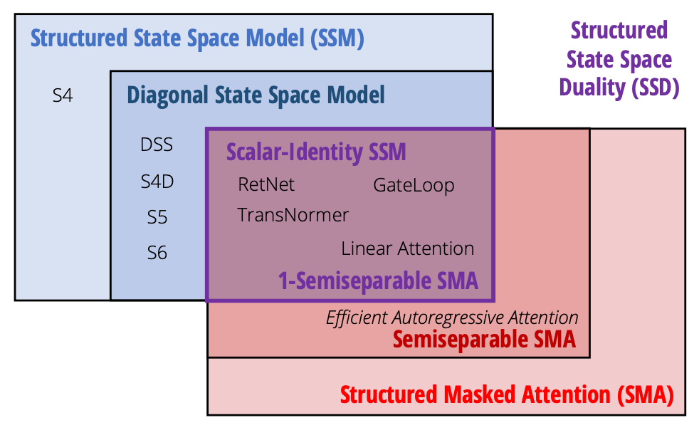
Background
State-space models have been used for decades to model continuous-time signals. In their simplest form, they are just a linear time-invariant system mapping some hidden variable \(h_t\) that to an observed variable \(y_t\), where \(h_t\) acts as a filter over some input signal \(x_t\), i.e.,
\(h_t = A h_{t-1} + B x_t\)
\(y_t = C^\top h_t\)
Where \(A, B, C\), are matrices parameterising the system in question.
Structured state-space models of sequences in deep learning, e.g. Mamba, make \(A, B, C\) matrices change over time and depend on the input.
The authors note that by induction
\(y_t = \sum_{s=0}^t C^\top_t \left[\prod_{r=s+1}^t A_r \right]B_s x_s\)
Which can be vectorised and written as a matrix multiplication \(y = Mx\) mapping sequence \(y\) to sequence \(x\) via matrix \(M\) where
\(M_{ji} = C^\top_j \left[\prod_{k=i+1}^j A_k \right]B_i\).
This makes \(M\) a semiseparable matrix.
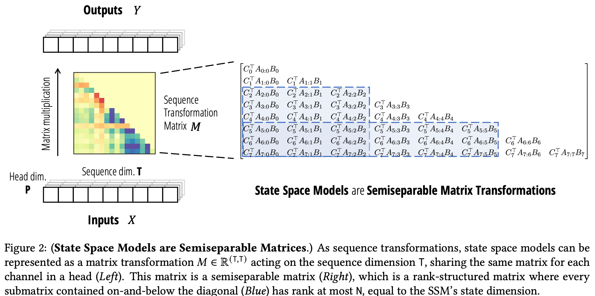
They also show that masked linear attention can also be written in this form, i.e., \(y = (L \circ QK^\top)v = Mv\), and that for a choice of structure for \(L\) (to make \(M\) semiseparable), and A, these can be made equivalent. In particular, when \(A\) is of the scalar-diagonal form \(aI\), it is equivalent to a weighted cumulative sum where weights are the product of \(a\) over time, and when \(L\) is a multiplicative causal mask with a relative positional encoding.
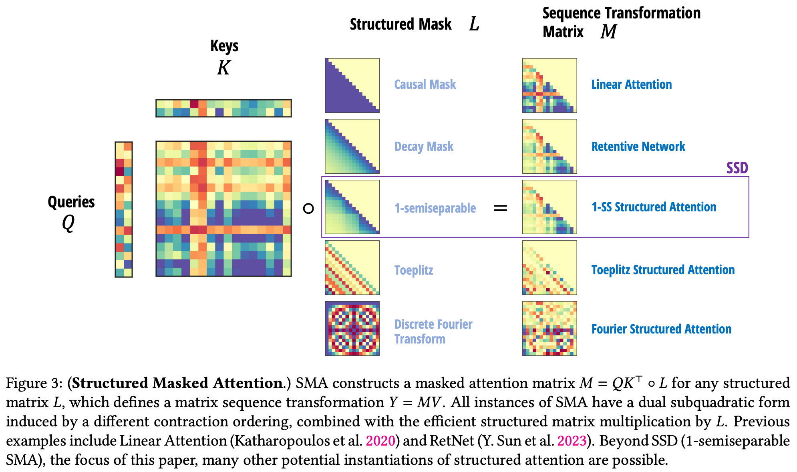
Using these insights, the authors propose the fundamental building block of Mamba-2: the State-Space Dual (SSD) layer, connecting state-space models to linear attention.
Their method
By restricting A to be in scalar-diagonal form, the general SSM layer of Mamba can be drastically simplified, permitting a more straightforward implementation that targets GPU tensor cores (improving throughput) via batched matrix multiplications rather than scan operations.
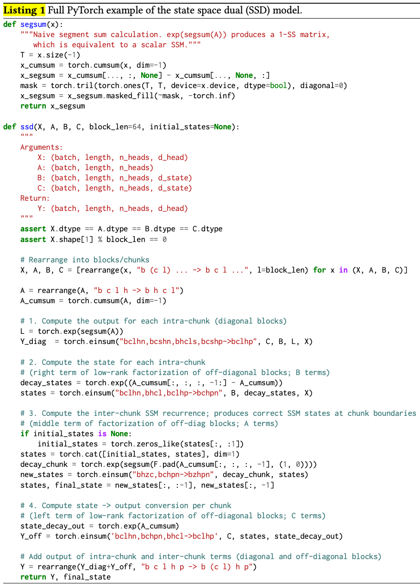
This also reduces space complexity to be linear (rather than quadratic) in hidden size.
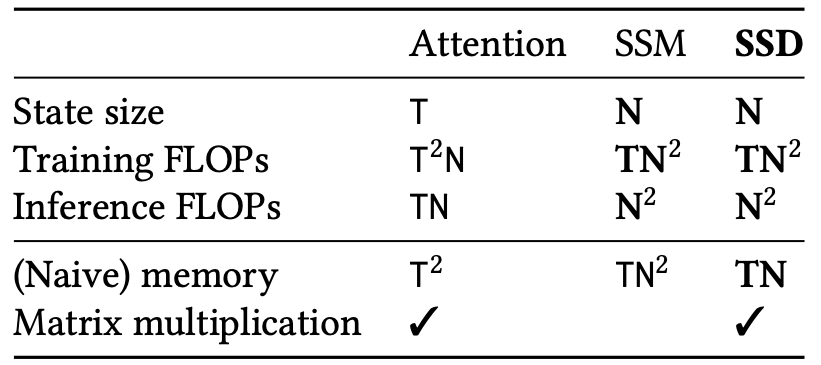
They also add a normalisation layer before the final output projection as Mamba was found to be unstable with larger state sizes, and permit B and C to be shared across heads, analogous to multi-/grouped-value attention.
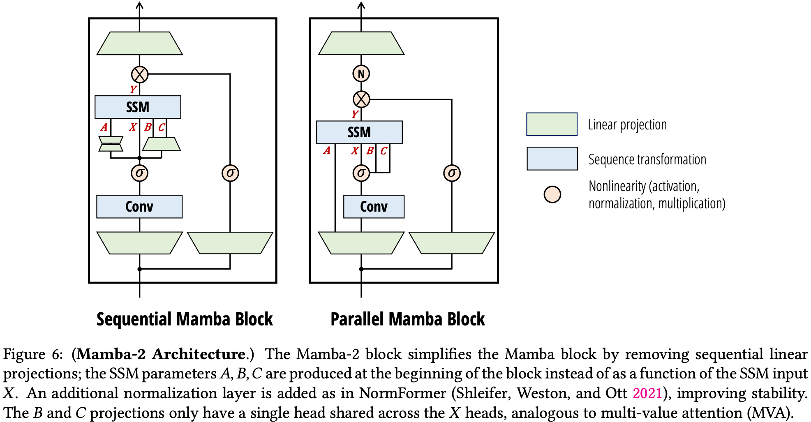
By allowing convolution blocks and normalisation to be grouped within devices, this block can be parallelised more easily, requiring only an all-reduce for the final output projection. SSD states may also be passed sequentially between devices to allow sequences to be split across devices.
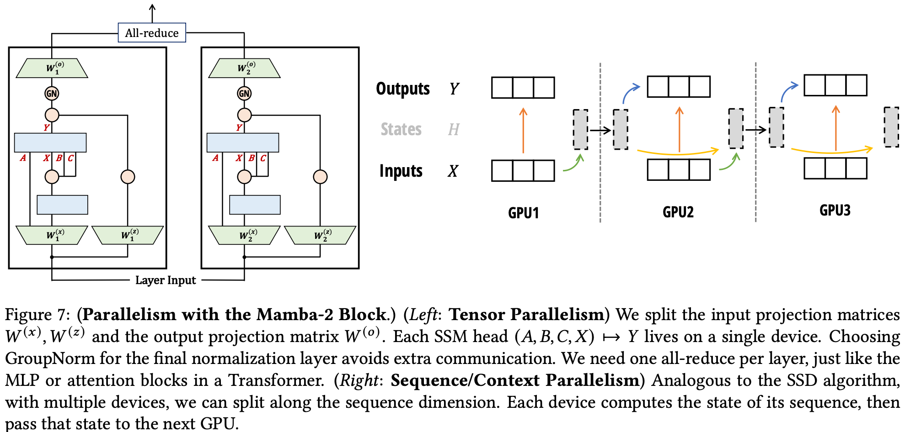
Results
The authors demonstrate improved associative recall on synthetic tasks due to larger state size permitted by improved space complexity. Mamba-2 could still hit a wall when model state capacity is saturated over longer sequence lengths however, while attention should be more robust.
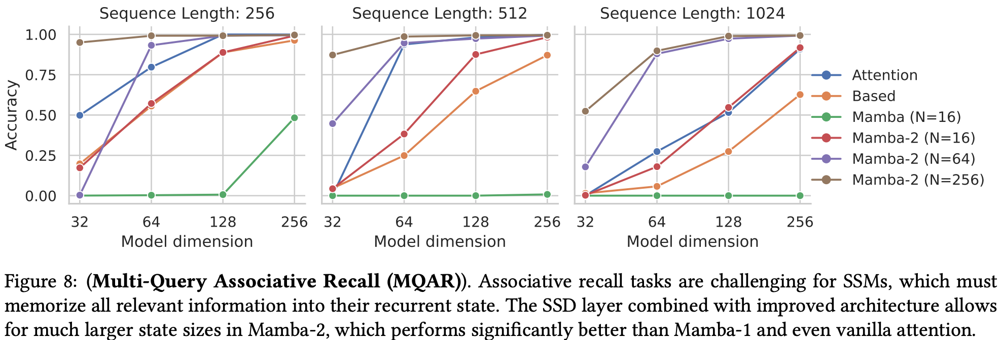
It's faster than flash attention at 2k sequence length (Mamba only at 16k), and remains faster with larger state sizes due to memory requirements linear with state size (quadratic with Mamba).
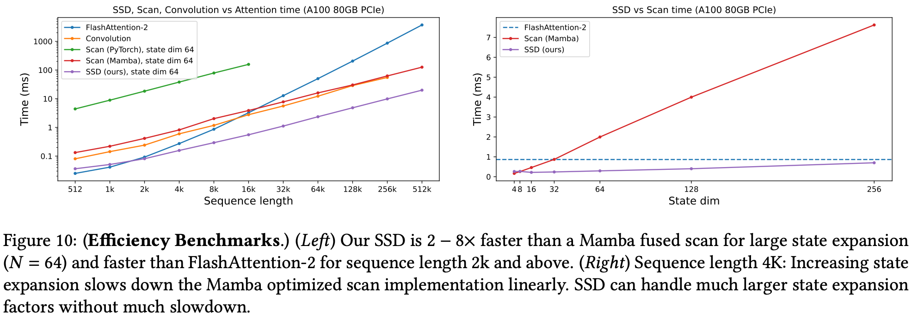
Scaling laws look comparable to Llama-like transformers (Transformer++) up to 1.3B. It is possibly worse at 2.7B as they appear to have trained up to this size but only compare to Pythia rather than Transformer++. Extrapolating from the scaling laws figure, it looks as though there might be a crossover soon after 1.3B.
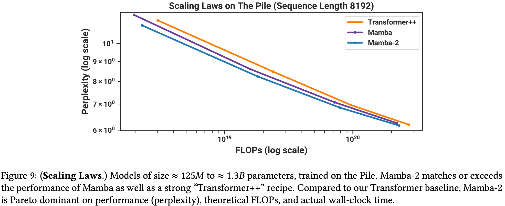
The authors also explore hybrid models blending SSD layers with attention and MLPs, demonstrating that 10% attention layers works well. Another paper released a few weeks after this one conducts a more thorough investigation.
Takeaways
The release of the original Mamba paper sparked a wave of exploration into applying Mamba to various domains and tweaking the architecture to improve performance, enabled in particular by open-sourcing optimised kernels for the scan operation at the heart. By removing the need for this more sophisticated scan operation entirely and instead being able to rely on batched matrix multiplications for acceleration, we can also speed up the cycle of experimentation. We might expect to see further improvements to this architecture at increasing scale.
Sparse maximal update parameterization: A holistic approach to sparse training dynamics
The key idea
Introducing sparsity into a model causes its learning dynamics to change, meaning that the optimal hyperparameters (especially learning rate) may be altered. Many previous studies have failed to account for this effect. By applying the principles of µP we can create sparse models with stable hyperparameters.
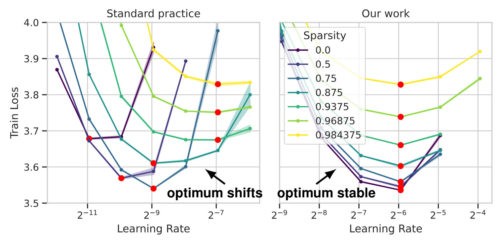
Background
Recent work has suggested that a simple and quite effective approach to sparsity is to prune a random selection of weight elements at initialisation. This kind of sparsity is known to affect learning dynamics, yet the community has largely persisted with fixing the dense LR across different sparsity levels, largely due to the expense of re-sweeping it with every sparsity change.
Recently µP has emerged as a method for ensuring consistent learning dynamics across models of different widths. This works by adjusting multipliers in the model, initialisation and learning rate such that activations and updates are invariant to changes in width.
Their method
Applying sparsity to a matrix multiplication is comparable to a matrix multiplication of reduced width. The authors leverage this to come up with a version of µP for sparsity, named SµPar ('soo-pahr'). Where \(m_d\) is the model width and \(m_\rho\) the model density (1 - sparsity), their rules are:
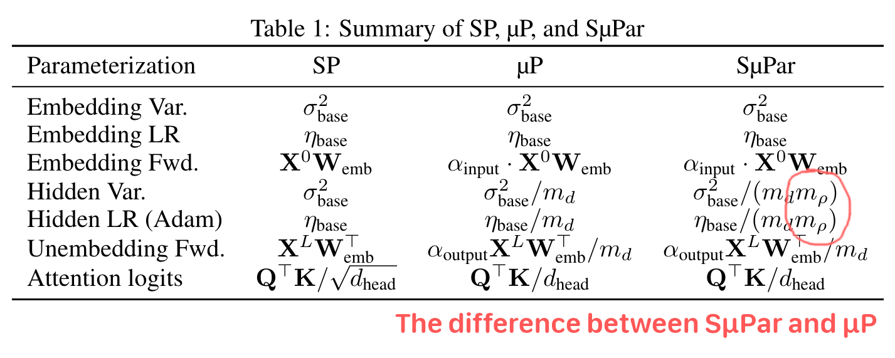
The paper contains some mathematical justification for this, which can make the method seem quite complex, but in reality the above table reflects the simplicity of the method: use µP with your sparse model as though it had its "effective width" of \(m_d \cdot m_\rho\) for the sparse layers.
Their aim is that
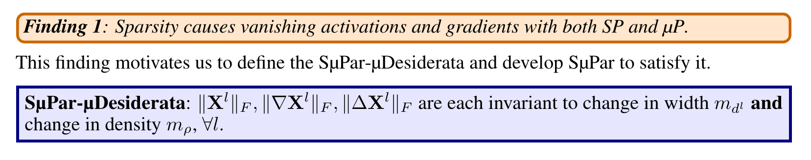
meaning they can scale with width and sparsity. In this way, they can make their models both wider and sparser at once and still keep the same learning dynamics.Results
Based on the fact they can scale width and sparsity simultaneously, they show the effect under this sparsity setup of keeping the number of non-sparse parameters fixed, and scaling the number of total parameters in combination with sparsity:
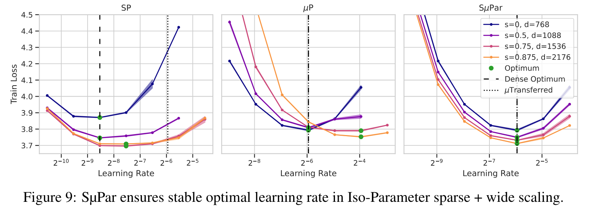
This is a neat result. The LR is much more stable, and there are clear gains to be had from increased sparsity (with a constant memory footprint).
The only negative here really is that the benefit is not particularly substantial. They plot the final validation loss for their full LLM training runs at different densities and even for the aggressive 1/128 sparsity the gain is relatively modest:
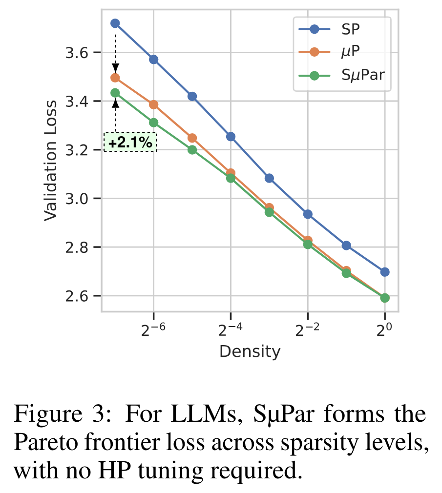
Takeaways
Nevertheless, this approach to stable sparsity is principled and worth adopting. One can see it being particularly useful for more extreme or unusual forms of sparsity, where the hyperparameters may shift further. It also has a lot of overlap with the recent Compute Better Spent paper, which also uses µP-style rules for different kinds of structured matrices. In general, the idea of controlling for learning dynamics when testing new ideas seems like it could become standard in years ahead.
Contextual Position Encoding: Learning to Count What’s Important
The key idea
Transformers rely on Position Encoding (PE) to inject information about the position of tokens in a sequence into the attention block, which by construction is order-invariant. This paper proposes Contextual Position Encoding (CoPE), a flexible, context-dependent technique for measuring positional distances at higher abstraction levels than just counting tokens, improving performance on language modelling and addressing common failures of LLMs in counting-based tasks.
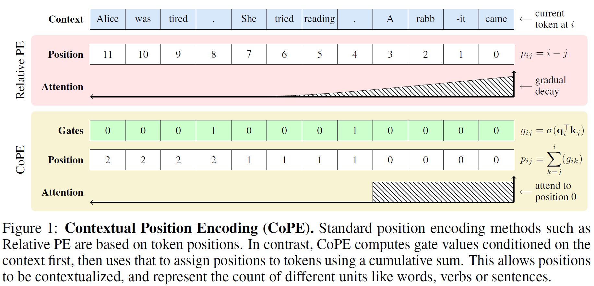
Background
PE introduces learnable position embeddings \(\mathbf{e}\_{i,j}\) into the attention block
with \(\mathbf{e}\_{i,j} = \mathbf{e}[i]\) for Absolute PE, or \(\mathbf{e}\_{i,j} = \mathbf{e}[i - j]\) in the case of Relative PE. A clear limitation of this setup is that positions are always measured in terms of tokens, which - depending on the task - might not be the best unit of measure. For instance, state-of-the-art LLMs (like GPT4) are observed to often fail at simple counting tasks that require them to attend only to tokens or words within specific chunks of text, like sentences or paragraphs, that can have highly variable lengths.
Their method
In CoPE, the distance of token \(j\) with respect to the query position \(i\) (with \(j < i\)) is measured based on the context of the intermediate tokens, through a soft gate:
In the attention computation we then use \(\mathbf{e}\_{i,j} = \mathbf{e}[p\_{i,j}]\) or, in the case where \(p\_{i,j}\) is not an integer, an interpolation of \(\mathbf{e}[\lfloor p\_{i,j} \rfloor]\) and \(\mathbf{e}[\lceil p\_{i,j} \rceil]\).
Relative PE can be seen as the limit case where all \(g\_{i,t} = 1\). More generally though, thanks to context-awareness, \(p\_{i,j}\) could be the count of a specific word, or the number of sentences, between token positions \(j\) and \(i\), or any other measure that the model finds useful to track. Note that, by construction, each attention head and each layer will compute a different \(p\_{i,j}\), thus allowing the model to represent different levels of position abstraction at the same time.
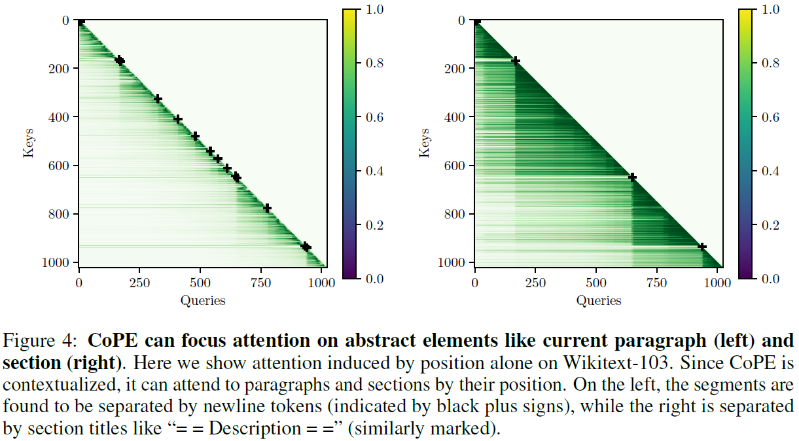
Results
CoPE is tested on a variety of artificial tasks (like selective copying/counting and the Flip-Flop task) where standard PE methods perform poorly. For all of them, CoPE yields strong improvements and better generalisation to out-of-distribution data.
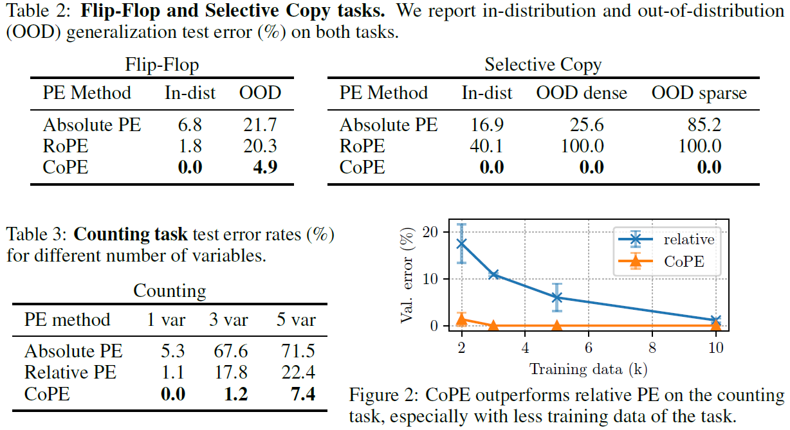
Moreover, CoPE improves in perplexity over Relative PE for language and code modelling with small Transformers (20M-100M parameters), also showing better generalisation to longer contexts than the ones seen in training.
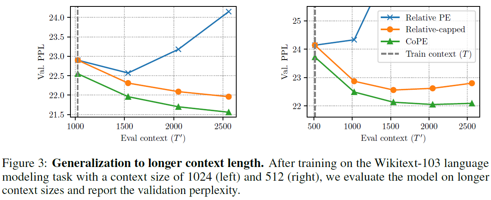
Takeaways
Despite the limited scale of experiments, the results show a promising step in the direction of making the reasoning and abstraction abilities of Transformers even more flexible. It will be interesting to see how CoPE performs on larger models, and quantify the trade-off between performance gains and additional computation costs on real-world downstream tasks.
Scalable MatMul-free Language Modeling
The key idea
Building upon BitNet b1.58, which quantises all parameter matrices in a LM into a ternary format, the authors describe a "matmul-free" LM where all forward pass matrix multiplies are ternary.
The authors achieve this by replacing self-attention with a structured-recurrence RNN, which contains only parametric matmuls and elementwise operations, and replace these parametric matmuls with ternary matmuls (shown below).
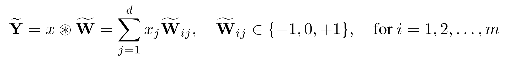
Their method
Following BitNet b1.58, forward-pass weights are quantised to {-1, 0, +1} using absmean quantisation, and activations to int8 using absmax quantisation:
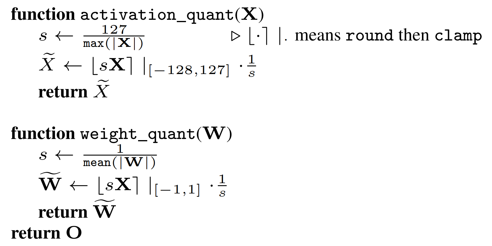
In the backward pass, the straight-through estimator replaces these with the identity function, such that the weight gradient and master weights are maintained in higher precision.
The authors replace attention with the Matmul-free Linear Gated Recurrent Unit (MLGRU),
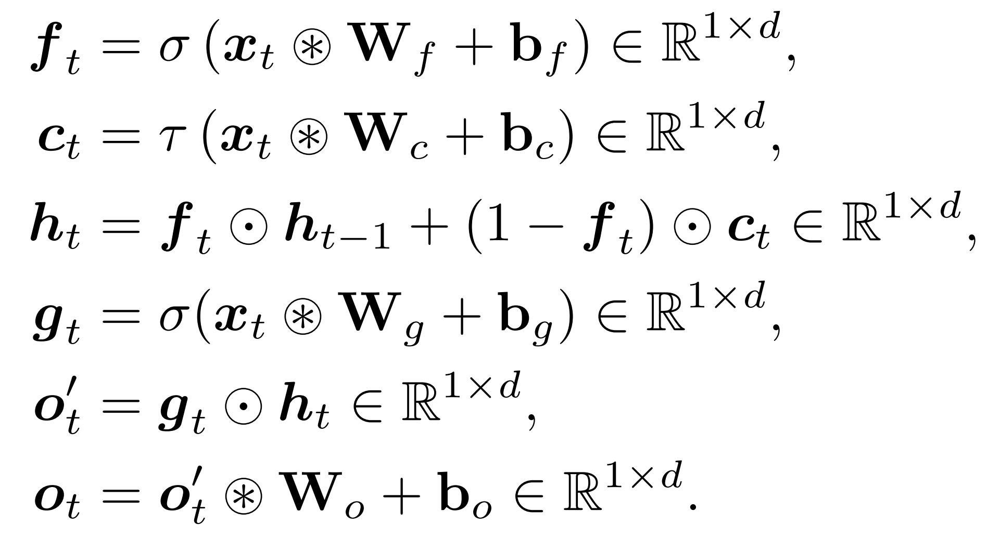
The MLGRU maps a sequence of inputs \(\boldsymbol{x}_t\) to a sequence of outputs \(\boldsymbol{o}_t\). First, compute three gates: forget gate \(\boldsymbol{f}\), output gate \(\boldsymbol{g}\) and candidate \(\boldsymbol{c}\), which are ternary-weight projections of the input with sigmoid, sigmoid and SiLU nonlinearities respectively. Then use the forget gate to interpolate between the previous hidden state \(\boldsymbol{h}\) and the candidate. Finally, use the output gate to mask the hidden state before projecting via a final ternary matmul.
FPGA implementation
While ternary weights provide an advantage of reducing memory transfers when running on modern ML hardware, they are not supported by matrix compute units, so the energy benefits of ternary quantisation are not realised. To illustrate the potential of the matmul-free LM, the authors implement a custom FPGA accelerator in SystemVerilog, implementing a small special-purpose instruction set. They deploy the RTL on a D5005 Stratix 10, which runs a width-512 single-layer forward pass in 43 ms.
While the authors acknowledge that this is a limited and preliminary result, their extrapolations to incorporate bursting over the DDR4 interface, using vendor IP and adding pipelining show promise (24 tokens/s of a 1.3B model at 13 W). The number of cores may also be increased, yielding higher throughput (and power).
Results
Results compare well against a Transformer++ baseline when trained on SlimPajama. The limited training duration makes it hard to compare the baselines with state-of-the-art LMs trained on this dataset, but the baseline is competitive with that of BitNet b1.58.
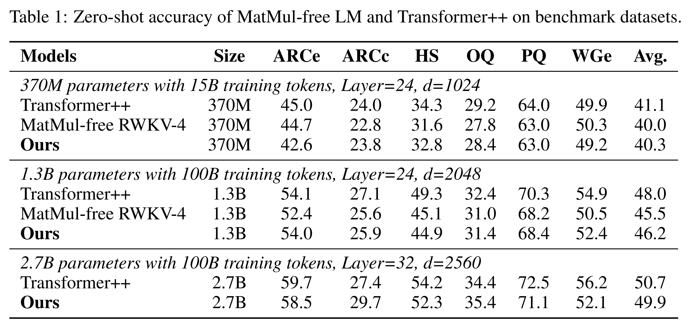
Takeaways
We're excited to see this line of work continue, as it challenges our preconceptions regarding continuous optimisation in deep learning and offers the promise of reaching new levels of practical efficiency.